C#基础知识简单梳理
本文是一个菜鸟所写，本文面向的人群就是像我这样的小菜鸟，工作一年也辛辛苦苦学习了一年，一直没有机会梳理一下自己的知识，最近花了一些时间整理了一些C#基础知识，也算是对过去的一年做个回顾把~
文章有点长，请自带瓜子和茶吧，请看下面C#基础知识简单架构图，不可能100%的全面，请见谅啊...
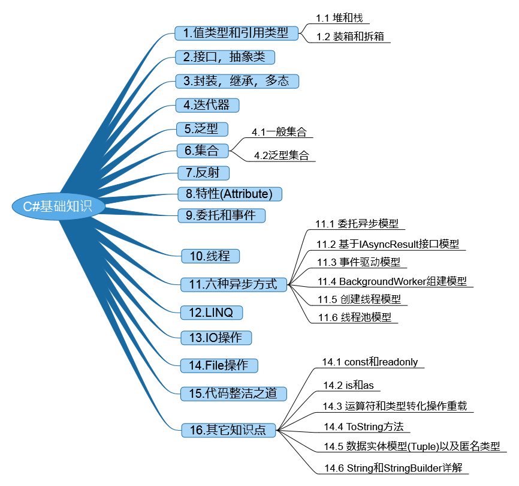
1.值类型和引用类型
1.1堆和栈
简单的说值类型存放在堆栈上面，引用类型的数据存放在托管堆上面(它的引用地址却存放在堆栈上面)！
栈：它是一个内存数组，是一个先进后出的数据结构！
栈的特征：数据只能从栈顶进，从栈顶出！
堆：它是一个内存区域，可以分配大块区域存储某类型的数据，与栈不同的是它里面的数据可以任意排序和移除！
下面是园子的一张图，贴上来供大家参考啊！
| 问 题 | 值 类 型 | 引 用 类 型 |
|---|---|---|
| 这个类型分配在哪里？ | 分配在栈上 | 分配在托管堆上 |
| 变量是怎么表示的？ | 值类型变量是局部复制 | 引用类型变量指向被分配得实例所占的内存 |
| 基类型是什么？ | 必须继承自System.ValueType | 可以继承自除了System.ValueType以外的任何类型，只要那个类型不是sealed的 |
| 这个类型能作为其他类型的基类吗？ | 不能。值类型是密封的，不能被继承 | 是的。如果这个类型不是密封的，它可以作为其他类型的基类 |
| 默认的参数传递是什么？ | 变量是按值传递的（也就是，一个变量的副本被传入被调用的函数） | 变量是按引用传递（例如，变量的地址传入被调用的函数） |
| 这个类型能重写System.Object.Finalize()吗？ | 不能。值类型不好放在堆上，因此不需要被终结。 | 可以间接地重写 |
| 我可以为这个类型定义构造函数吗？ | 是的，但是默认的构造函数被保留（也就是自定义构造函数必须全部带有参数） | 当然！ |
| 这个类型的变量什么时候消亡？ | 当它们越出定义的作用域时。 | 当托管堆被垃圾回收时。 |
1.2装箱和拆箱
关于装箱和拆箱是一个老生常谈的话题，也有很多文章来分析它，如：1. 6个重要的.NET概念:栈,堆,值类型,引用类型,装箱,拆箱 2. 值类型的装箱与拆箱浅析 3. 深入C#内存管理来分析值类型&引用类型，装箱&拆箱，堆栈几个概念组合之间的区别
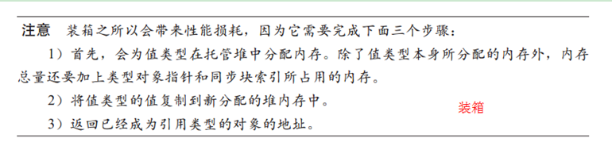
这类的文章真的多了，再总结就没多大的意义了，看的时候多写写代码，多想想，就会明白的！
2.接口，抽象类，封装，继承，多态
接口和抽象类这两个概念还真不容易理解，有的时候理解一半，换一种方法考考你，你就会晕，到现在说实话我还没完全懂，一直没有把握它们的精髓，最近在看<<你必须知道的.NET>>，这是第二次看，收获很多...
大家还是有时间多看看<<你必须知道的.NET>>，这本书可以说是很详细的讲解了OO思想，还有看看设计模式的书，多想多练，可以时间会长一点，不过总有一点我们会开窍的...
这种东西不是通过总结一下就能熟练运用的，不过你起码要有一点面向对象的思想，要想有这种思想必须学习前辈留下的知识总结，这种才能理论结合实践，才能深入的了解OO思想
推荐文章：细细品味C#——抽象、接口、委托、反射（感谢虾皮老师啊...）
3.迭代器
主要是对foreach的深入理解，以及对两个接口的深入剖析(包括它们的泛型结构)：IEnumerable(可枚举类型)，IEnumertor(可枚举数)，文章入口：使用IEnumerable和IEnumerator接口，从yield关键字看IEnumerable和Collection的区别
4.泛型
泛型保证了类型安全，避免了装箱和拆箱的操作，提高了性能，可复用性也得到了很大的提高，下面就来说说基本的泛型语法吧！
项目中对于泛型和委托的结合运用也很多见，很多人不是为了语法而学习，而是泛型的扩展性让我们必须要知道它，把它实实在在的运用到项目中去，提高扩展性...
泛型语法不是很复杂，包括定义泛型类型，泛型方法，指定泛型约束，还有泛型约束包括只包括哪些类型等等，这些语法只要花些时间就能明白了，难的是一种思想，o(︶︿︶)o 我还很菜啊...
推荐文章：细细品味C#——泛型系列专题（虾皮帮我们已经整理关于泛型的精彩文章，看完之后会有很多的收获）
5.集合
5.1一般集合
.NET Frameword中关于集合的类存储在System.Collections命名空间下，其实一开始学习的时候感觉集合这个东西很神秘，能动态增加，删除，选择数据(比数据好用多了)，可是在学习之后，它的神秘感也随之消息，因为集合的底层代码跟数组有着密切联系的，请看：学习之路二：关于集合和数组内在联系的深入了解(里面也有个链接，可以点击学习)！
下面是非泛型集合类之间的关系图：
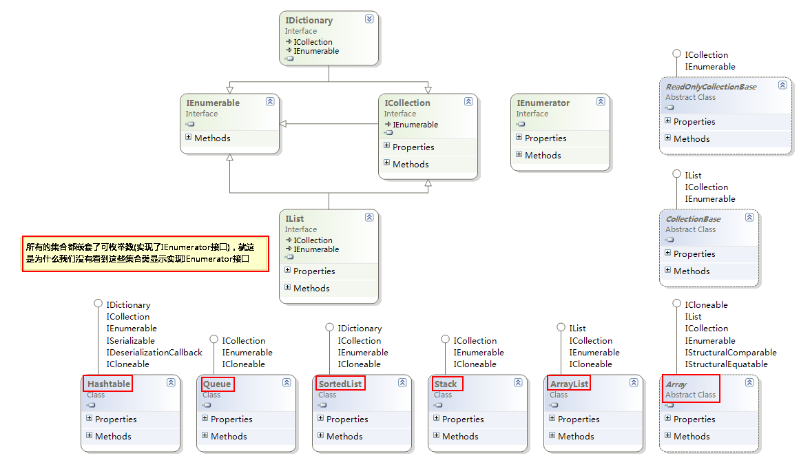
5.2泛型集合
自从.NET Framework引用泛型概念之后，它在C#编程方面掀起了一个泛型热潮，泛型实在太好用了，不仅是类型安全，可扩展性，重要的是在性能方面有了显著提高，这让我们苦逼的程序猿看到了曙光，哈哈...
泛型集合类存储在System.Collections.Generic以及System.Collections.ObjectModel命名空间下，下面是集合类之间的关系图：
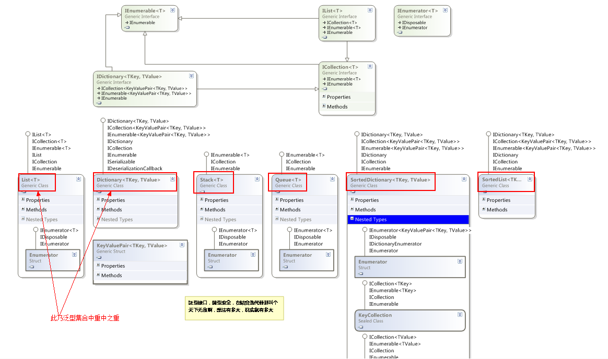
推荐文章：细细品味C#——泛型系列专题(有个pdf文件，下载下来回家慢慢看，同志们)
6.反射
反射这东西两面性很极端，很多人说它的坏，也有很它在某些方面有着重大的作用，下图是关于类型反射所需要用到的类之间的关系图：
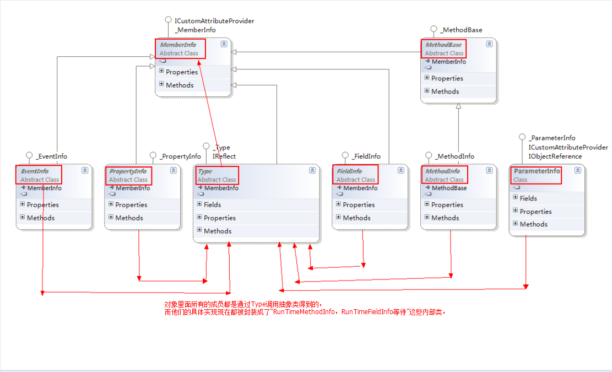
除了类型反射之外，还有一种是程序集的反射，功能比较强大，可是我对它的研究比较少，我就推荐几篇好文章把(下面几篇文章我也正在学习中)...
推荐文章 : 1..Net 中的反射(序章) - Part.1
2..Net 中的反射(查看基本类型信息) - Part.2
3..Net 中的反射(反射特性) - Part.3
4..Net中的反射(动态创建类型实例) - Part.4
7.特性(Attribute)
特性这个东西，在面向对象编程中有着非常重要的最用，在架构设计框架的时候，考虑使用特性的几率会非常的大！
特性结合反射技术就可以实现依赖注入，以前看到公司一个项目在写测试代码的时候，总是给每个方法加上[RollBack]的特性，当方法结束后，所有数据库的操作都将会回滚，我很费解，因为RollBack是自己定义的，怎么就一加上这个特性就自动完成回滚了！
下面就是完整的Rollback代码，可是我在使用它的时候遇到一个问题 ，就是它只可以用于单元测试，我尝试着把它用于一般的方法当中，可是一直没有实现回滚功能，我感到很费解，有兴趣的朋友可以帮我看看...
 View Code
View Code只能在单元测试里面进行调用：
1 [TestClass()] 2 public class ProgramTest : TestFixture //继承这个类 3 { 48 [TestMethod()] 49 [RollBack()] //添加这个RollBack特性，就能实现回滚了 50 public void MyTestTest() 51 { 52 SqlConnectionStringBuilder connectionString = new SqlConnectionStringBuilder 53 { 54 DataSource = @"LBDZ-20120514VC\SQLEXPRESS", 55 InitialCatalog = "My", 56 }; 57 connectionString.IntegratedSecurity = true; 58 59 using (SqlConnection conn = new SqlConnection(connectionString.ToString())) 60 { 61 conn.Open(); 62 SqlCommand cmd = conn.CreateCommand(); 63 cmd.CommandText = "INSERT INTO dbo.MyTable ( id) VALUES ( 6666 )"; 64 cmd.ExecuteNonQuery(); 65 Console.WriteLine("OK"); 66 } 68 Assert.IsTrue(true); 69 } 70 }
Question:这个RollBack我至今还没有弄懂它怎么来实现的，如果那个园友能看懂的话，可以私信给我或留言给我，我会打心里感谢你的，可能会涉及到AOP和IOC的知识，希望大家帮帮我把，纠结了很长时间啦...
推荐文章: 1. 关于C# 中的Attribute 特性
8.委托和事件
其实把理解事件跟字段和属性联系起来，虽然这样说可能会不严谨点，但是从一些大的方面讲事件就是对委托的封装，类似于属性对字段的封装，这种说法还是行得通的！
想要定义一个完整的委托和事件，需要经历一下步骤(需要注意一些命名规范)：
① 定义事件 → 委托使用微软提供的EventHadler<TEventArgs>泛型委托，一般都会有两个参数：
A) “object sender”定义的事件依附的对象，也就是事件定义在那个类中，那么这个参数就为这个类的实例化对象，一般都会用“This”！
B) “EventArgs e”也就是用于传递一些参数信息的对象，也可以使用自己定制的参数了
② 创建参数类 → 如果有必要定制的数据参数类(这个类似于创建自己的实体类用来传递信息)，这个参数类应该继承于EventArgs这个类!
③ 执行事件 → 其实在执行事件的时候还是有一定的规范的，比如方法名必须为“On+事件名”，还有在执行事件要判断下时候为null，，然后在调用！
④ 注册事件 → 调用事件(在传递事件对象的时候最好用“this”关键字)
⑤ 依附事件的方法 → 最后定义依附在这个事件中的方法，也就是执行这个事件的方法体，深入了解，其实依附事件中的方法其实都最终依附在事件衣服的委托中，这个委托会生成一个委托实例，以及一个委托链！
委托和事件定义语法：
委托： 访问修饰符 + delegate + 返回值类型 + 委托名(参数列表);
事件： 访问修饰符 + event + 委托名 + 事件名;
委托和事件跟观察者模式联系比较密切，可是我还是没有理解它的精髓，可能是我还太菜了...
总结：灵活运用事件和委托将会给你的程序带来更好的扩展性，这需要丰富经验的积累，好了推荐几篇我曾经学习过的文章把！
推荐文章：1. 庖丁解牛——深入解析委托和事件
2. C# 中的委托和事件
3. C#中的委托和事件(续)
9.线程
对于线程学习过，可是一直没有做过多线程的项目，一直没有领悟到它的精髓，也只能停留在表面的高度！
我就想说下Thread中的后台线程和前台线程（默认为“前台线程”），在这里总结下(其实我也是学习前辈们的知识)。
前台线程：当所有的前台的线程都执行完毕以后才会退出程序！
后台线程：对于后台线程，程序是不管你是否是执行完成的，不过当你程序一旦强制退出，后台线程也会终止的！
1 Thread thread = new Thread(delegate() 2 { 3 Console.WriteLine("线程开始工作"); 4 Thread.Sleep(2000); //暂停两秒钟 5 Console.WriteLine("线程结束"); 6 }); 7 thread.IsBackground = true; //分别设置为true和false，看看控制台运行的情况，我相信你能很快明白的 8 thread.Start(); 9 Console.WriteLine("主线程结束");
总结：设置为后台线程相当于我们说的异步，而前台线程就相当于同步，执行好线程在执行主程序！
能够熟练使用多线程，还是要在项目中不断的实践，可是项目是可遇而不可求的东西，现在我的项目是肯定要不到了，只能自己看看文章，熟悉熟悉知识啊...
推荐文章: 1. C# 温故而知新： 线程篇(一)
10.六种异步方式
10.1 委托异步模型
使用的是委托的BeginInvoke和EndInvoke异步执行模式！
必须要有两个条件：
① 必须要有个委托作为寄宿体
② 执行函数 ExecuteFunction
③ 回调函数 CallBackFunction ，所谓的回调函数就是获取执行函数的返回值！
有了上面三种条件之后，就可以直接调用Begin和End进行委托异步编程了，其中还有细节问题需要注意，下面我们就一一来看！
具体思路步骤：
① 选择一个适合的委托类型，如参数列表，返回值类型
② 创建一个执行函数，必须跟委托的参数列表和返回值类型对应起来
③ 创建一个回调函数，它只有一个参数没有返回值，参数类型为IAsyncResult类型，这是使用委托实现异步的规范写法，不可改变
代码实现：
1 //写一段简洁的代码 2 private void button1_Click(object sender, EventArgs e) 3 { 4 //定义委托，并指定异步的执行方法 5 Func<string, string> func = new Func<string, string>(ExecuteFunction); 6 //开始异步，并指定异步的回调函数 7 func.BeginInvoke("实现了异步", new AsyncCallback(CallBackFunction), "my"); 8 } 9 10 private string ExecuteFunction(string str) //执行函数 11 { 12 Thread.Sleep(2000); 13 // To Do 14 return str; 15 } 16 17 private void CallBackFunction(IAsyncResult ar) //回调函数 18 { 19 //转化变量类型 20 //因为委托异步编程的类型为AsyncResult类，而这个类又是实现了IAsyncResult接口的，可以说是它的基类！ 21 AsyncResult async = ar as AsyncResult; 22 Func<string, string> func = async.AsyncDelegate as Func<string, string>; 23 //获取异步执行函数的返回值 24 string str = func.EndInvoke(ar); MessageBox.Show(str); 25 } 26 //在最后进行类型转化的时候，尽量使用“as”进行转化！
10.2 事件驱动模型实现异步
这个模式的异步编程是所有异步方式中最为复杂的一个，我对它的理解也是很有限的，只限于使用它，不会自己构建它！
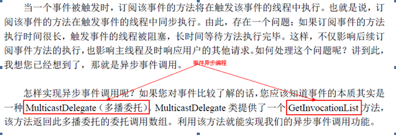
基于事件模型的异步不是一个通用型的，只有当需求要进行事件模型异步编程的时候才要进行事件模型异步的创建，主要有两种方法：
①通过获取事件中的委托列表，然后通过委托实现异步
首先这个异步思想是基于事件模型的，所以它会对你的事件定义有很大的要求，主要就是那两个参数的定义，可能会重新定义存储信息类！
实现思路：
a) 通过事件注册执行方法
b) 获取事件依附的委托
c) 最后就是通过委托调用BeginInvoke实现异步
代码如下：
View Code②通过自定义事件模型实现异步（暂时不会，我会给出几篇文章参考）
10.3 使用IAsyncResult接口实现异步
使用IAsyncResult接口编程和使用委托异步编程的最大区别：
① 委托异步调用阻塞发生在线程池的工作线程
② IAsyncResult异步调用阻塞方式在线程池的I/O完成线程
Note：其实使用IAsyncRsult接口重要的是对于一些流操作或者一些文件操作都是固定的Begin和End，所以只有当使用那些异步操作的时候才使用它
使用方法跟委托异步很相似，具体的实现代码就不贴了！
10.4基于BackgroundWorker组建实现异步
Note：其实这个组件最终也是基于事件异步模式进行创建的，所以说它就是封装了事件异步编程模型，从而使开发者使用更方便！
这个模型使用率比较高，因为微软都帮我们封装好了，只要学习一下就会使用它了！
1 private void button1_Click(object sender, EventArgs e) 2 { 3 BackgroundWorker worker = new BackgroundWorker(); 4 //注册执行函数 5 worker.DoWork += ExecuteFunction; 6 //注册回调函数 7 worker.RunWorkerCompleted += CallBackFunction; 8 //执行事件，启动异步操作 9 worker.RunWorkerAsync("通过e.Argument来读取的"); 10 } 11 12 //执行函数 13 public void ExecuteFunction(object sender, DoWorkEventArgs e) 14 { 15 Thread.Sleep(2000); 16 //因为result的类型为Object 17 //所以可以存入各种对象各种控件对象都可以存入 18 e.Result = "实现异步，这是我存入的值"; 19 string str = e.Argument.ToString(); //这边的值是跟你启动异步方法中存入的参数 20 } 21 22 //回调函数 23 public void CallBackFunction(object sender, RunWorkerCompletedEventArgs e) 24 { 25 //读取存入的值，而这个类似于委托异步编程中获取执行函数的返回值 26 //相当于委托异步编程中 → 返回值的应用 27 MessageBox.Show(e.Result.ToString()); //读取 28 }
10.5创建后台线程实现异步
实现思路：
① 创建新的线程，并指定在线程运行的程序
② 设置线程为后台运行，推荐一篇文章：
③ 启动线程
代码实现：
1 private void button3_Click(object sender, EventArgs e) 2 { 3 //创建新的线程，并指定它的执行方法 4 Thread thread = new Thread(new ParameterizedThreadStart(MyThreadMethod)); 5 thread.IsBackground = true; 6 thread.Start("aa"); 7 } 8 public void MyThreadMethod(object obj) 9 { 10 //不可以把这个暂停的时间方法创建线程之前，因为你在线程之前暂停那个时候还没有创建好，不能实现异步，所以这是不可以的 11 Thread.Sleep(2000); 12 MessageBox.Show("这是线程实现异步的"); 13 }
10.6使用线程池实现异步
实现比较简单，代码如下：
1 //实现代码： 2 private void button4_Click(object sender, EventArgs e) 3 { 4 //这句代码很重要 5 ThreadPool.QueueUserWorkItem(MyThreadMethod, "aaa"); 6 } 7 8 public void MyThreadMethod(object obj) 9 { 10 Thread.Sleep(2000); 11 MessageBox.Show("这是线程实现异步的"); 12 }
10.7六种异步模式的总结
其实这个总结是根据Fish文章进行总结的，o(∩_∩)o 哈哈...
1.异步委托调用：它的实现是将原来需要阻塞的操作交给线程池的工作线程来处理了，此时线程池的工作线程被阻塞了！但是此方法对于依赖【线程池的工作线程】来处理任务的编程模型来说是没有意义的，比如Asp.Net ，Windows Services以及Web Services这些服务类的编程模型！所以它比较适应一些单线程编程模型，比如Winform这种的单线程！
2.使用IAsyncResult接口：它的实现是将原来需要阻塞的操作交给线程池的I/O完成线程来处理了，所以它适合任何类型。但是有限制，因为不是所有的API都支持此类接口，不过许多的I/O操作是支持此接口的，还有实现起来会比较复杂！
3.基于事件的异步：这种方式可以认为是对其它异步方式的封装，其主要目的是简化异步调用模型，使用者可以直接调用事件就能实现异步，如果此模式是对第二种异步方式进行异步封装，那么它将具体第二种的所有优点！
4.创建新线程的异步：主要特点是在后台创建一个新的线程来执行异步方法，如果有很多用户同时执行异步操作，那么后台就会创建无数个线程，损害性能，尤其是对服务类的编程模型来说使用起来没有任何意义，所以在没有上诉情况下可以考虑使用这种异步方法！
5.使用线程的异步：基本上跟创建新线程类似，仅仅适用于一些桌面程序！
6.使用BackgroundWorker的方式：它的底层也是在使用线程池的工作线程，也是采用的基于事件的异步模式，只不过它使用起来真的很方便，它不是使用的IAsyncResult接口进行异步操作的，只是模式上类似于事件异步模式！
最后：在.NET中标准的异步模式都是使用的IAsyncResult接口，所以后三种并不算真正的异步，但它们却在某些场合有着很大的作用！
强烈推荐文章：1. C#客户端的异步操作
2. 我所知道的.NET异步
3. 详解.NET异步
上面的学不会也找我，:-)
11.LINQ
11.1 LINQ原理剖析
这里主要是关于LINQ家族中：Linq To Object，对它的研究还是比较多的！
LINQ是基于委托的一种高级语法，如果不能正确的理解委托的定义和使用，你就不会真正的理解LINQ和委托天衣无缝的结合，还有一点就是LINQ和迭代器的结合，所以理解委托和迭代器，LINQ你也就会用了！
11.2 Lambda表达式，匿名方法
LINQ也就是一些语法糖，会语法了，LINQ自然而然就会用了，下面就把常用的语法汇总一下，再复习一次：
1 Func<string, string> myFunc = delegate(string str) //匿名方法语法，括号内为参数列表 2 { 3 return "sss"; 4 }; 5 myFunc += strOne => //这边的strOne是个方法，我没写，只要注意参数和返回值一致就可以了 6 { 7 return strOne; 8 }; 9 myFunc += (string strTwo) => //Lambda表达式，指定了参数类型 10 { 11 return strTwo; 12 }; 13 myFunc += (strThree) => //Lambda表达式，也可以不指定类型，系统会自动检测 14 { 15 return strThree; 16 }; 17 myFunc += strFour => "ssssss"; //不需要加“return”，因为编译器会帮你自动加上去的！ 这样写法就搞急了，放眼一看说真的一开始还真看不懂！ 18 Action myAction = () => Console.WriteLine("ssssssssss"); 19 myAction += () => Console.WriteLine("sssssss"); //如果没有参数，直接使用括号就可以了 20 myAction += delegate() 21 { 22 Console.WriteLine("ssssssssssssss"); 23 };
注意事项:①如果有参数的话，必须写明参数变量！
②可以不写参数类型，编译器会自动判断！
③如果没有参数必须要写一个空的括号，这样才说明没有参数！
④如果方法中只有一行代码，可以不要花括号，反之则要！
11.3 LINQ扩展方法汇总
|
Family |
Query Operations |
|
Filtering |
OfType, Where |
|
Projection |
Select，SelectMany |
|
Partitioning |
Skip, SkipWhile, Take, TakeWhile |
|
Join |
GroupJoin, Join |
|
Concatenation |
Concat |
|
Ordering |
OrderBy, OrderByDescending, Reverse, ThenBy, ThenByDescending |
|
Grouping |
GroupBy, ToLookup |
|
Set |
Distinct, Except, Intersect,Union |
|
Conversion |
AsEnumerable, AsQueryable, Cast, ToArray, ToDictionary, ToList |
|
Equality |
SequenceEqual |
|
Element |
ElementAt, ElementAtOrDefault, First, FirstOrDefault, Last, LastOrDefault, Single, SingleOrDefault |
|
Generation |
DefaultIfEmpty, Empty, Range, Repeat |
|
Quantifiers |
All, Any, Contains |
|
Aggregation |
Aggregate, Average, Count, LongCount, Max, Min, Sum |
11.4 LINQ详解方法使用细节
①写个我觉得比较难的“Group By”方法
分组语法最难理解的就是对“key”的理解，以及“into”关键字后面包含的是什么东西（就是我们分组后要使用的数据源），以及理解“by”关键后后面就是存放“key”的地方，代码示例：
1 var queryTwo = from book in SampleData.Books 2 group new { book.Title, book.PageCount } //分组的关键字 3 by new { Name = book.Publisher.Name, Subject = book.Subject.Name } //给分组关键字设置别名 4 into newBook //分组之后的数据源 5 select new { Books = newBook }; 6 7 //使用嵌套“foreach”来循环遍历 8 foreach (var item in queryTwo) 9 { 10 Console.WriteLine(item.Books.Key); 11 foreach (var book in item.Books) 12 { 13 Console.WriteLine(book.Title + " " + book.PageCount); 14 } 15 }
总结：理解 → group A by B into C (A：数据源中的关键字 B：分组之后给关键字去的别名 C：分组之后的数据源)！
因为最后的newBook是我的最终数据源，上面也提过最终数据源是包括所有分组的key，所以在调用key的时候应该拿最终的数据源集合调用，还有当大于1个分组关键字时进行读取的时候会以这样的方式出现{ Name=Book,Subject=aaa}，还有大部分情况遍历分组LINQ查询都会使用嵌套的Froeach语句来检索数据！
推荐一篇文章: 你能指出这个 ForEach 扩展方法中的错误吗？ ，其实可以做的更好，我需要不断的学习啊...
11.5 自定义LINQ扩展方法
如果想写自定义LINQ方法，无非就是继承IEnumerable接口的扩展方法，写一个我们常用的foreach，这样可以节省我们好多的foreach代码，如下代码：
1 public static class Program 2 { 3 static void Main(string[] args) 4 { 5 string[] strings = { "a", "b", "c" }; 6 strings.MyForeach(Console.WriteLine); //括号里面是个方法 7 } 8 9 public static void MyForeach<T>(this IEnumerable<T> source, Action<T> func) 10 { 11 foreach (T item in source) //先循环遍历我的数据源，然后把每个数据方法我的匿名方法中，从而输出值！ 12 { 13 func(item); //item是参数 14 } 15 } 16 }
总结：写代码无时无刻，但是我们最关注是对代码的思考，对代码的感悟，思想的提升，不管怎么样，写完之后停下来想想，想什么全由个人来定，有人想性能，有人想重构，想优化，想简洁，只有努力过后思想强大了才能在编程道路上得心应手！
本人也研究了一些关于Linq To SQL的知识，可惜学艺不精啊！
强烈推荐文章:1. LINQ体验系列文章导航
3. LINQ之路系列博客导航
看完上面三个系列，学不会找我，:-)
12.IO
这个系列我没有系统的学习过，不过园子里面有个人写的很好，也正在学习中，推荐文章：C# 温故而知新：Stream篇（—）
下面是我整理的流操作系统类图：
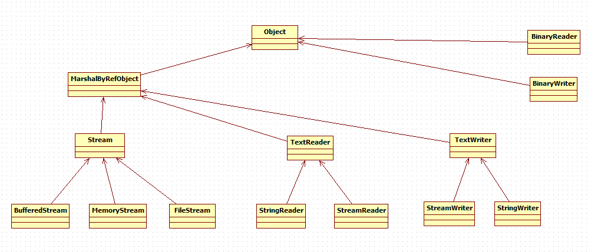
13.File
熟悉文件系统的操作是学习.NET Frameword必不可少的一部分，我没有系统的学习过这些知识，但能运用一些常见方法进行项目开发，下面是文件系统主要的类图架构，理解它们之间的关系，相信学习起来也很方便啦！
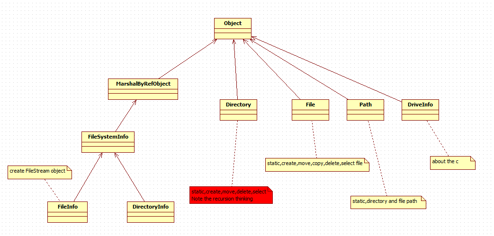
推荐文章：细细品味C#——文件操作
14.代码整洁之道
最近看完了经典之作：Code Clean，收获很多，分享一下我的感悟，主要是代码规范，设计方面的知识！
整洁代码只做一件事，糟糕的代码逻辑混乱，想做很多事，导致了阅读，修改困难！
14.1 整洁代码的基本规则：
①通过所有的单元测试
②没有重复代码，如果同一段代码出现了两次以上，那就是提醒你该提取相同代码进行重构了，时刻提醒自己不要重复
③体现系统设计的理念
④有意义的命名
14.2 注重代码的读与写，它们的比例是“10：1”
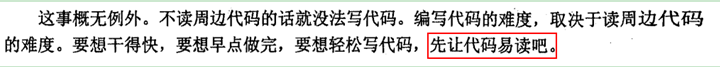
14.3 抽离try/catch代码快，这个非常赞同这个原则， 上图：
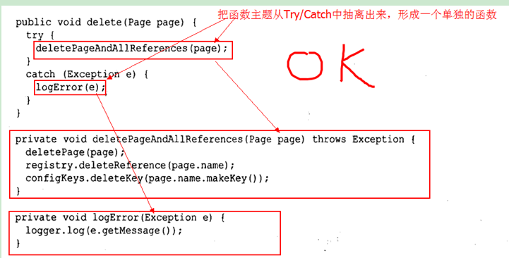
14.4 关于注释(书中讲到的注释规则让我很有同感，因为现在项目中就有这样的现象)
请注意：注释也许真的不需要，学会使用代码就能完整表达设计和逻辑意图！
常见现象：代码在变动，在演化，彼此分离和重合，可是注释并不总是随着变动，上图：
所以只有代码才能真正的告诉你它在干什么，它有什么作用！
Note：与其花时间编写解释你那糟糕代码的注释，还不如花时间清洁那糟糕的代码！
坏注释和多余注释的几点原则：
①有时候一段坏的注释不紧会影响代码的整洁，而且还会占用一定的时间，最终读注释的时间比阅读代码的时间还长，所以这种注释要删除它，影响我们阅读代码的时间
②日志式注释：这种注释最有感触，在class开头写上每次修改的记录，这种方式也有好处，但是这种情况应该在没有源代码控制的情况下进行记录(其实我听赞同在class头上写上每次修改的版本的)
③关于废话性和误导性的注释坚决不能存在
④能用函数和变量是就别用注释，所以变量和函数的命名真的很重要，可以让人一眼就能看出它的作用
请明白非常重要的一点：注释的作用就是解释未能自行解释的代码，如果注释本身还需要解释，就太遗憾了！
14.5 单元测试的重要性
一直觉得单元测试可有可无，那是因为我只是学习过从来没有真正的在项目中运用过，可是最近我下了狠心要在项目中构建一个单元测试框架，终于被我搞定了，我也感悟到单元测试对一个开发人员的重要性，想学习的话可以看看这篇文章：走进单元测试五：单元测试文章系列目录
建议大家看看<<代码整洁之道>>和<<.NET设计规范>>以及<<程序猿修炼之道之单元测试>>
15.其它知识点
15.1 const和readonly本质区别
理解两者是在“编译时”还是“运行时”常量，以及两者的作用域，那么它们将不会这么神秘！
编译时OR运行时：
const：编译时
readonly：运行时
作用域：
const:①本身就是静态变量
②只能定义基本类型，如int，string等等
③局部变量和全局变量都可以定义
④一旦定义就不能修改
readonly:①不是静态变量，如果需要需加上“static”关键字
②可以定义一切类型，可以是自己自定义的对象
③只能定义全局变量
④一旦定义可以在构造函数里面进行初始化变量
总结：园子里面还有很多对于它们性能方面的文章，有兴趣的可以搜搜看，推荐使用“readonly”吧！
15.2 is和as操作符
16.2.1 As和强制转化最本质的区别
As：进行转换的时候永远不是出现异常，当转换失败时会返回一个“null”值，所以你只需要进行一个null值的判断就知道转换失败还是成功了！
强制转化：会出现转换失败并抛出异常，所以我们都需要使用“try/catch”来捕获转换出错的异常，也可以使用“is”来判断是否是你要转换的类型！
16.2.2 一些常见注意点
① as不能用于值类型的转化
如：object number=100;int numberOne = number as int;
这是因为如果转换失败，那么就会返回一个“null”值，但是值类型是不允许为“null”的，所以在语法上是行不通的，就是你写成了“int?”也是不行的！
② 使用Is配合强制转换来进行类型转换
首先使用“Is”来判断是否是我需要转换的类型，然后在进行强制转换
View Code③ 在没有泛型的foreach中，也是把“object”进行强制转化成所需要的类型，代码如下：
View CodeNote：或者使用GetType()方法来精确检测是否是你想要的转换类型!
15.3 运算符操作以及类型转化操作重载
这两个知识点还是比较容易学习的，一个是操作符的重载，一个是用于自定义强制转换的方法(你也可以使用“as”进行强制转换)，只要稍加注意一些语法就好了！
1 public class MyPerson 2 { 3 public string Name { get; set; } 4 5 /* 6 * ①必须为静态 7 * ②关键字operator 8 * ③需要定义重载的操作符 9 * ④定义返回值类型 10 */ 11 public static MyPerson operator +(MyPerson personFather, MyPerson personMother) 12 { 13 return new MyPerson() { Name = personFather.Name + personMother.Name }; 14 } 15 16 /* 17 ①必须为静态 18 * ②关键字“explict”和operator” 19 * ③需要转化的类型：MyPerson 20 */ 21 public static explicit operator MyPerson(MyPeople myPeople) 22 { 23 return new MyPerson(){ Name="YCG" }; 24 } 25 } 26 public class MyPeople 27 { }
具体的用法如下：
1 MyPerson personOne = new MyPerson() { Name = "AAAAAA" }; 2 MyPerson personTwo = new MyPerson() { Name = "BBBBB" }; 3 MyPerson personThree = personOne + personTwo; //操作符重载 4 Console.WriteLine(personThree.Name); 5 6 MyPeople people = new MyPeople() { Name = "wang wei" }; 7 MyPerson personFour = (MyPerson)people; //类型强制转换 8 Console.WriteLine(personFour.Name);
15.4 ToString方法
入口： c# 扩展方法奇思妙用高级篇五：ToString(string format) 扩展
15.5 数据实体模型(Tuple)以及匿名类型
16.5.1 Tuple实际上就是一个匿名的实体的模型，它的用处在于不要自己定义一个实实在在的Entity，使用它就能达到效果！
View CodeNote：在查看源代码的时候注意它的第八个参数：
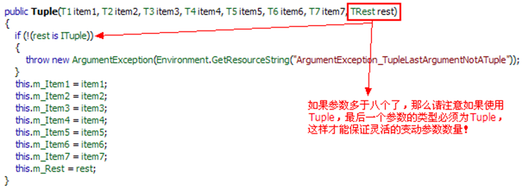
16.5.2 匿名类型
1 var data = new { number = 11111, str = "ssssss" }; //不需要定义变量的类型，如果想知道匿名类型底层源码怎么写的，可以使用反编译查看源码，一目了然了！ 2 Console.WriteLine(data.number + data.str);
15.6 String和StringBuilder详解
这个技术大妞们已经讨论的很多，我也没这个能力说的一清二楚，推荐几篇文章吧：1. 字符串的驻留（String Interning） 2. 深入理解string和如何高效地使用string 等等，实在很多啦...
17.Remoting
传送门：.NET Remoting技术文章汇总 ，看过那些文章，对于Remoting的理解会有一个质的上升...